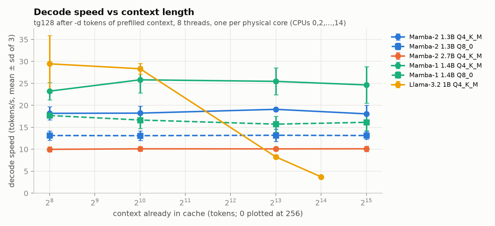
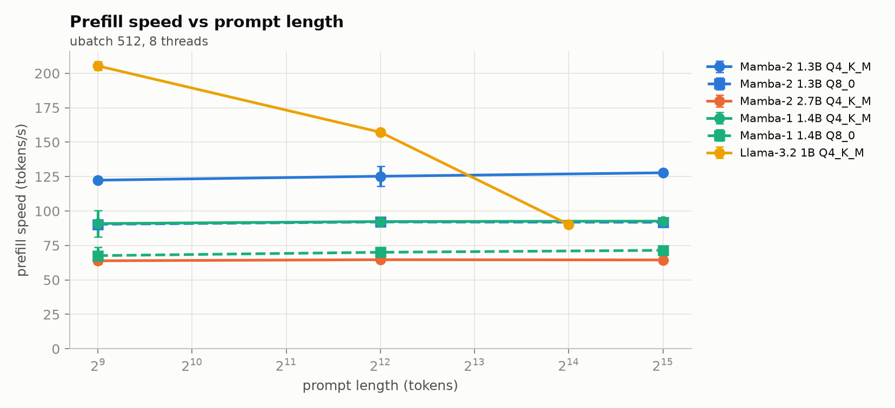
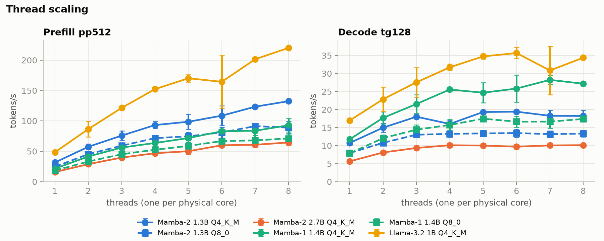
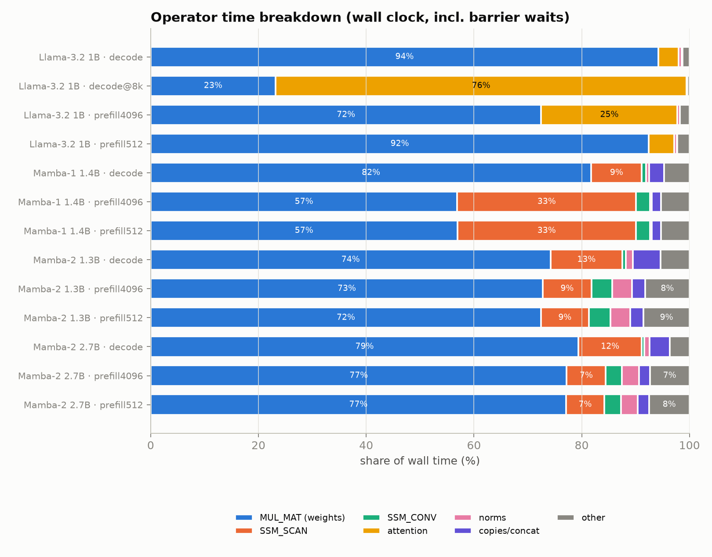
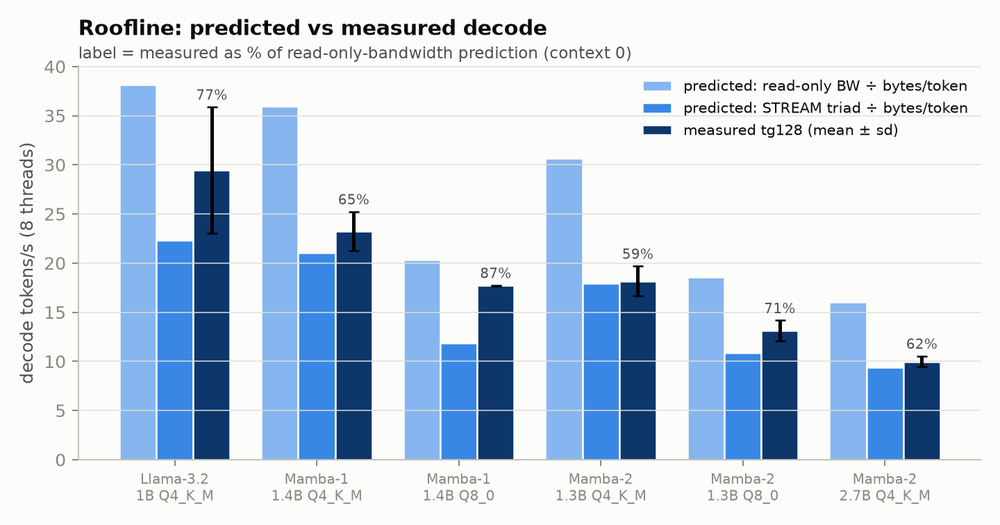
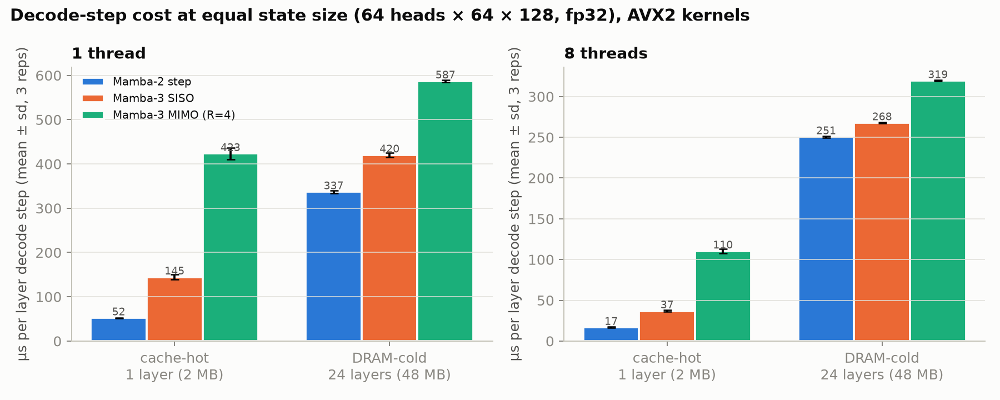
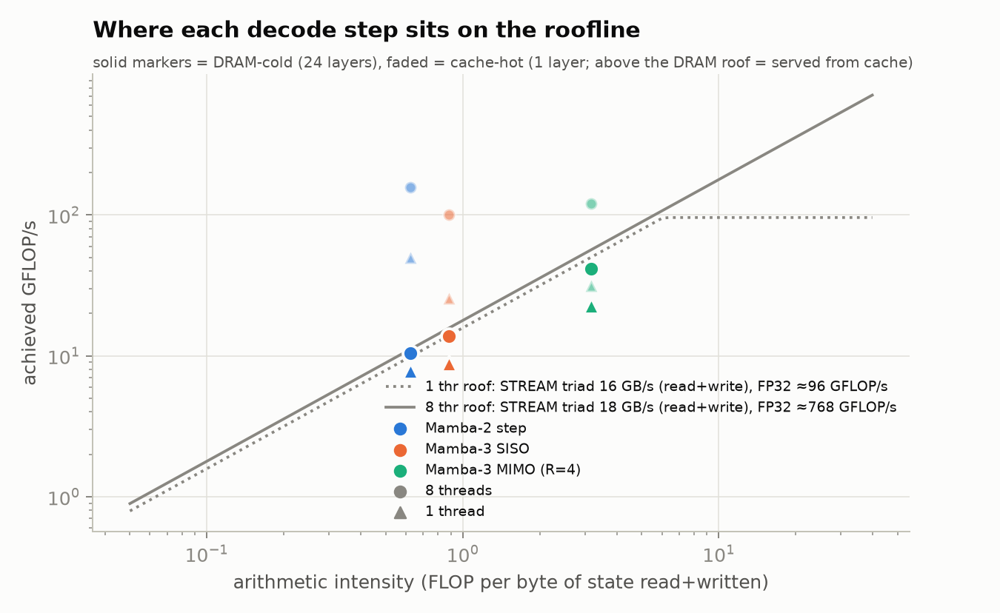
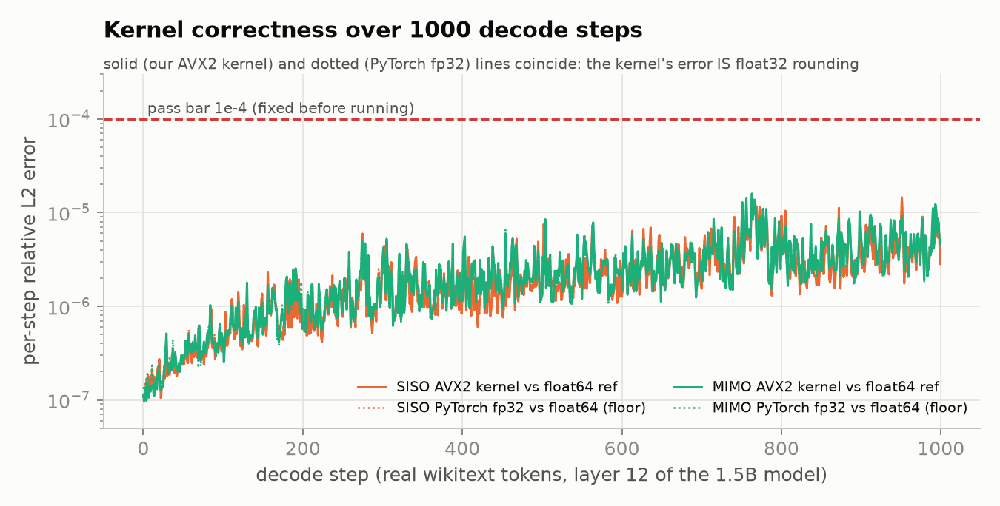

| Item | Value | Item | Value |
|---|---|---|---|
| CPU | Ryzen 7 4800H, Zen 2, 8C/16T, not hybrid | SIMD | AVX2 + FMA + F16C, no AVX-512 |
| Caches | 32 KB L1d + 512 KB L2 per core; 2×4 MB L3 (2 CCX) | Memory | 2×8 GB DDR4-3200 dual channel (51.2 GB/s peak) |
| Measured bandwidth (8 thr) | read-only 30.5 GB/s; STREAM copy 27.9, triad 17.8, scale 15.1 | Clock under load | 3.53 GHz mean, p5 3.40 GHz (never below 2.9 base); logged every 10 s on AC (two brief off-AC windows in a later pass → the 2 overlapping runs were redone on AC) |
| OS / engine | Win 11 + WSL2 Ubuntu 24.04, 7 GB visible; GGML_NATIVE, OpenMP | Threads | one per physical core (CPUs 0,2,…,14), OpenMP-pinned |
Hygiene: charger on, "Turbo" power plan, IDE and browser windows closed (a windowless background Chrome process used ≈ 2 % of one core); every run — benchmark, perplexity, sample generation and profiling — records peak RSS, and every benchmark run records swap activity (zero swap-ins except 1–32 pages ≈ 4–128 KB on 7 of 166 runs, < 0.01 % of runtime; rule in §9). Bandwidth saturates at 3–4 threads (read-only 19.1 GB/s at 1 thread, 29.6 at 4, 30.5 at 8). STREAM copy beats triad because glibc memcpy uses non-temporal stores (no write-allocate); read-only is the right ceiling for weight streaming.
No trustworthy Mamba-2 GGUFs exist, so the official state-spaces checkpoints were converted with the pinned llama.cpp (lossless 16-bit intermediate) and quantized per the rules: Q4_K_M everywhere, Q8_0 only ≤ 1.5 B. Mamba-1 1.4B is included to answer the option's question; Llama-3.2-1B (base, converted the same way from Meta's weights) is the dense contrast and the shared reference model.
| Model | Quant | File | Peak RSS, GiB (max over runs) | Wikitext-2 PPL (40×512 tok) | Greedy sample |
|---|---|---|---|---|---|
| Mamba-2 1.3B | Q4_K_M / Q8_0 | 0.85 / 1.54 GB | 1.72 / 1.72 GB | 11.55 ± 0.31 / 11.10 ± 0.29 | coherent |
| Mamba-2 2.7B | Q4_K_M | 1.64 GB | 3.29 GB | 9.91 ± 0.26 | coherent |
| Mamba-1 1.4B | Q4_K_M / Q8_0 | 0.82 / 1.47 GB | 1.57 / 1.54 GB | 11.92 ± 0.32 / 11.42 ± 0.30 | coherent |
| Llama-3.2-1B (base) | Q4_K_M | 0.81 GB | 2.33 GB (16 k ctx) | 10.56 ± 0.28 | coherent |
PPL is comparable only across quantizations of one model (tokenizers differ); PPL reproduces to every printed digit on a second pass. All runs stay inside the ≈ 4.5 GB budget (max 3.29 GiB). Mamba RSS is flat in context; Llama's grows 1.26 → 2.33 GiB from 0 to 16 k tokens (KV cache). One violation was found and fixed: sample generation first ran with llama.cpp's default context (Llama-3.2's trained 131 k → 5.25 GiB); re-run with -c 2048 (1.31 GiB).


| tokens/s (8 thr) | pp512 | pp4096 | pp max | tg d=0 | tg d=1k | tg d=8k | tg d=max |
|---|---|---|---|---|---|---|---|
| Mamba-2 1.3B Q4_K_M | 122.4 ± 1.8 | 125.2 ± 7.3 | 127.8 ± 0.5 (32k) | 18.2 ± 1.5 | 18.2 ± 1.6 | 19.1 ± 0.2 | 18.1 ± 2.0 (32k) |
| Mamba-2 1.3B Q8_0 | 90.4 ± 2.9 | 92.1 ± 1.3 | 91.9 ± 0.2 | 13.1 ± 1.0 | 13.1 ± 1.1 | 13.2 ± 1.4 | 13.1 ± 0.9 |
| Mamba-2 2.7B Q4_K_M | 63.9 ± 2.0 | 64.7 ± 0.2 | 64.5 ± 0.2 | 10.0 ± 0.5 | 10.1 ± 0.5 | 10.1 ± 0.5 | 10.1 ± 0.6 |
| Mamba-1 1.4B Q4_K_M | 90.9 ± 9.6 | 92.4 ± 1.4 | 92.7 ± 0.3 | 23.2 ± 2.0 | 25.8 ± 3.0 | 25.5 ± 3.1 | 24.6 ± 4.2 |
| Mamba-1 1.4B Q8_0 | 67.6 ± 6.0 | 70.1 ± 0.6 | 71.5 ± 0.2 | 17.7 ± 0.0 | 16.7 ± 1.9 | 15.7 ± 1.8 | 16.1 ± 1.9 |
| Llama-3.2 1B Q4_K_M | 205.4 ± 3.1 | 157.2 ± 1.4 | 90.2 ± 0.3 (16k) | 29.5 ± 6.4* | 28.3 ± 1.2 | 8.3 ± 0.4 | 3.72 ± 0.01 (16k) |
* bimodal: in two separate 3-rep runs one repetition fell to ≈ 22 tok/s (22.7, 31.9, 31.5 and 33.2, 22.0, 33.2); the identical test in the thread sweep gives 34.4 ± 0.2, and the profiling build 34.3. We report the recorded mean and show the tight run beside it.
| threads × context (decode tg128, tok/s) | 1 thr, 1k | 1 thr, 8k | 4 thr, 1k | 4 thr, 8k | 8 thr, 1k | 8 thr, 8k |
|---|---|---|---|---|---|---|
| Mamba-2 1.3B Q4_K_M | 10.0 ± 0.8 | 10.4 ± 0.0 | 18.3 ± 0.1 | 17.1 ± 2.0 | 18.2 ± 1.6 | 19.1 ± 0.2 |
| Mamba-2 1.3B Q8_0 | 7.9 ± 0.5 | 7.6 ± 0.5 | 13.0 ± 1.3 | 12.9 ± 1.2 | 13.1 ± 1.1 | 13.2 ± 1.4 |
| Mamba-2 2.7B Q4_K_M | 5.6 ± 0.3 | 5.6 ± 0.3 | 9.9 ± 1.0 | 9.8 ± 1.2 | 10.1 ± 0.5 | 10.1 ± 0.5 |
| Mamba-1 1.4B Q4_K_M | 11.8 ± 1.1 | 12.0 ± 1.1 | 25.9 ± 0.1 | 25.5 ± 0.1 | 25.8 ± 3.0 | 25.5 ± 3.1 |
| Mamba-1 1.4B Q8_0 | 8.1 ± 0.6 | 8.5 ± 0.6 | 17.1 ± 0.1 | 15.9 ± 2.0 | 16.7 ± 1.9 | 15.7 ± 1.8 |
| Llama-3.2 1B Q4_K_M | 12.3 ± 1.2 | 2.1 ± 0.0 | 27.6 ± 0.3 | 5.1 ± 0.2 | 28.3 ± 1.2 | 8.3 ± 0.4 |
Cross sweep (spec step 5: context × threads × quantization). For every Mamba model and quantization, context has no effect at any thread count and decode saturates by 4 threads; Llama at 8 k context keeps scaling with threads (2.1 → 5.1 → 8.3 tok/s) because attention over the KV cache is compute-bound. Prefill pp4096 × threads: Mamba-2 1.3B 32.0 / 88.2 / 125.2, Llama 36.6 / 109.0 / 157.2 tok/s at 1 / 4 / 8 threads.
Two observations frame the rest of the report. (1) Mamba-1 decodes faster than Mamba-2 at matched size although its weights are slightly larger (817 vs 787 MB): Mamba-2's per-token state traffic is 206 MB (48 layers × 64 heads × 64 × 128 fp32, read + written) versus 30 MB for Mamba-1 (d_state 16). (2) Decode repetitions spread by up to ± 17 % (Mamba-1 at 32 k) while prefill at long prompts is tight (± 0.2–0.5 %); decode tokens last only 30–100 ms each, so host-side jitter (WSL2 on Windows) and barrier timing show up in them. Means are reported as measured; differences smaller than the spreads are not interpreted.

Three independent views: (i) an opt-in per-operator wall-clock profiler patched into ggml's graph loop (docs/ggml-op-profile.patch, separate build; counts compute and barrier wait per op), (ii) perf record (cycles:u) on the unmodified build, (iii) perf stat hardware counters (WSL2 exposes the PMU). Decode = tg256, prefill = pp512 and pp4096, 3 repetitions each.

| Top 3 ops | Decode | Prefill 4096 |
|---|---|---|
| Mamba-2 1.3B | MUL_MAT 74 %, SSM_SCAN 13 %, CPY 4 % | MUL_MAT 73 %, SSM_SCAN 9 %, SSM_CONV 4 % |
| Mamba-2 2.7B | MUL_MAT 79 %, SSM_SCAN 12 %, CPY 3 % | MUL_MAT 77 %, SSM_SCAN 7 %, RMS_NORM 3 % |
| Mamba-1 1.4B | MUL_MAT 82 %, SSM_SCAN 9 %, ADD 2 % | MUL_MAT 57 %, SSM_SCAN 33 %, SSM_CONV 3 % |
| Llama 1B | MUL_MAT 94 %, FLASH_ATTN 3 %, ADD 1 % | MUL_MAT 72 %, FLASH_ATTN 25 %, SWIGLU 1 % |
| Llama 1B @ 8 k | FLASH_ATTN 76 %, MUL_MAT 23 % | — |
perf agrees: the hottest symbol in Mamba-2 decode is ggml_gemv_q4_K_8x8_q8_K (58 % of cycles, the repacked Q4_K GEMV), then ggml_compute_forward_ssm_scan (9 %); by library, 22.8 % of all cycles are in libgomp — threads spinning in OpenMP barriers. Peak RSS was logged for all 70 profiling runs (max 3.13 GiB).
exp(Δt·A[d,n]) for every element (A is a d_inner×16 matrix), Mamba-2's A is one scalar per head, leaving pure FMAs, and across a 512-token ubatch the state stays in cache. In decode the order flips: Mamba-2 must stream its 8× larger state from DRAM every token (8.5 ms ≈ 24 GB/s, near the bandwidth roof), while Mamba-1's 30 MB state is small and its scan is bounded by the per-element exp.Prediction = measured read-only bandwidth ÷ bytes read per token. Bytes are counted from each GGUF: every weight tensor once (batch-1 GEMV, no reuse; tied output embeddings counted in full), plus recurrent state read + written in fp32, plus the f16 KV cache for Llama. Mamba-2 1.3B: 787 MB weights + 206 MB state = 993 MB → 30.7 tok/s predicted, 18.2 measured (59 %).

| decode, ctx 0 | Llama 1B | Mamba-1 1.4B | Mamba-2 2.7B | Mamba-2 1.3B |
|---|---|---|---|---|
| % of read-BW prediction (llama-bench) | 77 % (90 %*) | 65 % | 62 % | 59 % |
| % of prediction (profile build) | 90 % | 74 % | 62 % | 51 % |
| MUL_MAT effective BW | 29.1 GB/s | 26.6 | 19.5 | 16.6 |
| state ÷ weight bytes | 0 | 0.04 | 0.22 | 0.26 |
| graph nodes / token | 277 | 1205 | 1541 | 1157 |
| barrier-wait share | 8 % | 14 % | 13 % | 17 % |
| IPC decode / prefill | 0.59 / 1.88 | 0.75 / 1.85 | 0.42 / 1.68 | 0.39 / 1.61 |
Row 1 from the benchmark runs (as Fig 5; * = Llama's tight runs); rows 2–6 from the per-op profile build; IPC from perf stat.
Explaining the gap. (1) Memory-bound, not compute-bound: decode IPC is 0.4–0.8 versus 1.6–1.9 in prefill, and decode speed stops scaling exactly where STREAM saturates (Fig 3). (2) The quantized GEMV is not the problem: Llama's Q4_K matmuls stream at 29.1 GB/s, 95 % of measured read bandwidth, on the same machine. (3) Recurrent-state traffic slows the weight stream: MUL_MAT's effective bandwidth drops monotonically with the state:weight byte ratio (29.1 → 26.6 → 19.5 → 16.6 GB/s; same order in both profiling passes). llama.cpp updates the state out of place (ssm_scan writes a new 2 MB buffer, then cpy moves it into the cache — code-verified), so dirty lines are written back during the next layers' weight-streaming GEMVs, which absorb the cost. (4) Synchronization: Mamba-2 runs ~1150 graph nodes per token (Llama 277), each ending in a thread barrier: 17 % of wall time is barrier waiting. (5) Thermal throttling is ruled out by the frequency log; cache misses rise from 4 % (prefill) to 8 % of references (decode). For Llama at long context the gap is different: at 8 k the KV cache adds only ~270 MB (bandwidth would predict ~29 tok/s) yet decode is 8.3 tok/s — attention compute (FLASH_ATTN_EXT, 76 % of time) takes over, which is also why Llama@8k is the one decode case that keeps scaling with threads (cross table); attention starts to dominate between 1 k and 8 k tokens.
Changed exactly one thing: the type of Mamba-2 1.3B's ssm_in (55.7 % of bytes/token), all variants requantized identically from the same Q8_0. Hypotheses and pass bars were written before running (docs/experiment_preregistration.md). Prediction: tg ∝ 1/bytes, calibrated on the Q4_K baseline (BW_eff = 18.4 GB/s).
| ssm_in | bytes/token | predicted tg128 | measured tg128 | error | pp512 | PPL |
|---|---|---|---|---|---|---|
| Q4_0 | 993 MB | 18.53 | 17.24 ± 0.43 | −7.0 % | 126.1 ± 0.8 | 11.64 ± 0.31 |
| Q4_K (baseline) | 993 MB | — | 18.53 ± 0.42 | — | 119.8 ± 23.0 | 11.56 ± 0.31 |
| Q5_K | 1098 MB | 16.76 | 16.62 ± 0.47 | −0.8 % | 121.5 ± 20.3 | 11.49 ± 0.31 |
| Q6_K | 1209 MB | 15.22 | 14.94 ± 1.23 | −1.8 % | 133.9 ± 1.2 | 11.48 ± 0.31 |
| Q8_0 | 1412 MB | 13.03 | 14.26 ± 0.02 | +9.4 % | 105.9 ± 2.6 | 11.45 ± 0.30 |
H1 (bytes predict decode within ±10 %): pass. H2 (same bytes ⇒ < 5 % difference, Q4_0 vs Q4_K): fail — Q4_0 is 7 % slower at identical bytes; the repacked Q4_K 8×8 GEMV streams better. Q8_0 beating its prediction has two explanations we cannot separate (simpler kernel, or per-token costs that do not scale with ssm_in bytes — barriers and state traffic). H3 (quality): monotone but not resolved — PPL falls 11.64 → 11.45, but every step is below the ±0.30 error. Conclusion: Q4_K is the right type for ssm_in on this machine.
Llama-3.2-1B Q4_K_M, pp512 + tg128, same llama.cpp commit and byte-identical model (SHA-256 checked), CPU partition, Intel Xeon Gold 6240R (Cascade Lake, AVX-512). The account's QoS allows 4 CPUs per job (48-core requests pend with QOSMaxCpuPerUserLimit), so the run uses 4 cores of a shared node.
| 4 threads | pp512 (tok/s) | tg128 (tok/s) | peak RSS |
|---|---|---|---|
| Rudra job 186433 | 298.5 ± 0.6 | 39.27 ± 0.02 | 1.32 GiB |
| Rudra job 186434 | 300.2 ± 0.8 | 39.30 ± 0.04 | 1.32 GiB |
| this laptop (4 threads, same test) | 152.3 ± 0.7 | 31.7 ± 0.9 | 1.26–1.32 GiB |
Base Llama-3.2-1B, converted on the laptop and copied to Rudra (SHA-256 identical). The two jobs agree within 0.6 %; an earlier pair run with the Instruct GGUF (archived, results/rudra/instruct/) gave 298.2 / 291.8 and 40.71 / 38.71 tok/s — the same architecture and size, so within the 3–5 % job-to-job noise of a shared node. With 4 cores, Rudra's prefill is 2.0× the laptop (native AVX-512 build: twice the vector width for the compute-bound GEMMs) while decode is only 1.2× (both bandwidth-limited; a 4-core slice of a 6-channel socket vs the laptop's whole dual-channel bus).
The official Mamba3.step runs only on CUDA. We assembled a CPU reference from the repo's own pure-PyTorch references and found that pretrained checkpoints are public (state-spaces/mamba3-{siso,mimo}-1.5b), so all tests use real weights and real hidden states (wikitext through layers 0–11). The update: α = exp(AΔt), β = (1−λ)Δtα, γ = λΔt (trapezoidal rule), data-dependent rotation of B and C (the complex state), and S ← αS + Σrγ(x·wr)⊗Br + Σrβ(xprev·wr)⊗Bprev,r, yr = S·Cr + Dxr. FLOPs per state element: Mamba-2 5, SISO 7, MIMO-4 25; bytes per element (fp32 state in + out) identical.
| Correctness (bars fixed in advance) | Result |
|---|---|
| our step vs upstream step ref (f64), SISO / MIMO | 2.2e-16 / 2.2e-16 |
| vs upstream chunked forward ref (independent form) | 1.3e-7 |
| full 1.5B model decoded token-by-token on CPU, PPL | SISO 12.23, MIMO 11.79 |
| MIMO with interleaved instead of halved rotation | PPL 24.7 → layout settled |
| AVX2 SISO / MIMO kernel, 1000 real steps (bar 1e-4) | 1.45e-5 / 1.60e-5 = PyTorch fp32 floor |
| Mamba-3 as ggml custom op vs direct | bit-exact |
| µs / layer step (2 MB state) | M2 | SISO | MIMO | MIMO/SISO |
|---|---|---|---|---|
| cache-hot, 1 thr | 52.4 | 144.7 | 423.4 | 2.93× |
| cache-hot, 8 thr | 16.7 | 37.1 | 110.5 | 2.98× |
| DRAM-cold (24 layers), 1 thr | 337.2 | 420.2 | 587.3 | 1.40× |
| DRAM-cold (24 layers), 8 thr | 250.7 | 267.8 | 319.5 | 1.19× |


